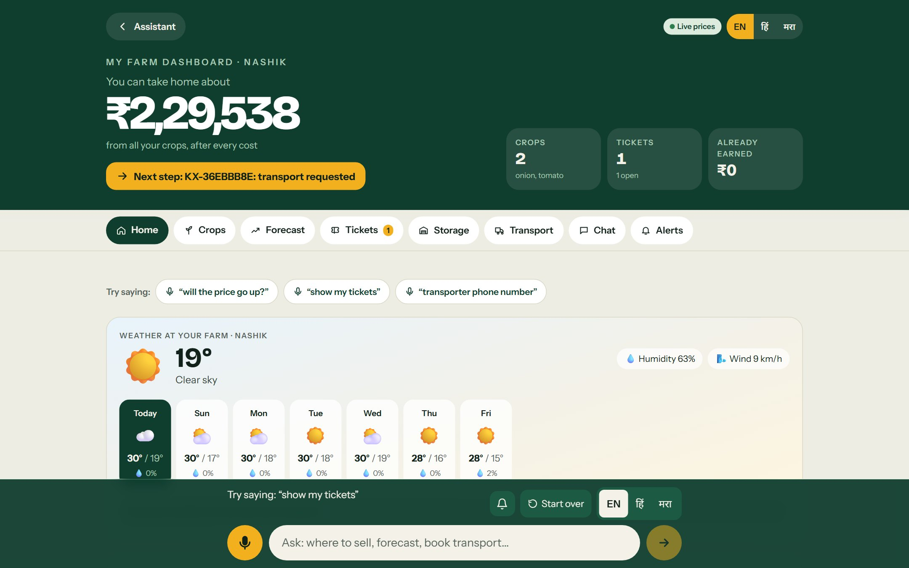

Near Nashik · 6:00 am
50 quintals.
5 months.
1 decision.
“Where do I sell?”
Moment 1 · He speaks
“I have 50 quintal onion and 20 quintal tomato near Nashik.”
Onion 50 qtl, tomato 20 qtl, farm near Nashik. Is this correct?
2 crops · 2 amounts · 1 village, from one sentenceNothing happens without his “yes”

Moment 3 · Every mandi, real roads

★ Best · 35 km
₹2,06,788
2nd best · 38 km
₹1,87,883
One decision is worth
₹18,905
Moment 6 · He says “yes, create the order”
And the whole chain moves.
👨🌾Farmersays “yes”
→
🧾Sale orderKX-36EBBB8E
→
🚚Transporterstoken TR-EF148A
→
🏬Warehousestorage request
→
🤝FPO · Buyerpooled loads



Farmers don't need more information.
They need one
honest answer.
KRISHI-X
Know what you keep, before you sell. · Thank you.